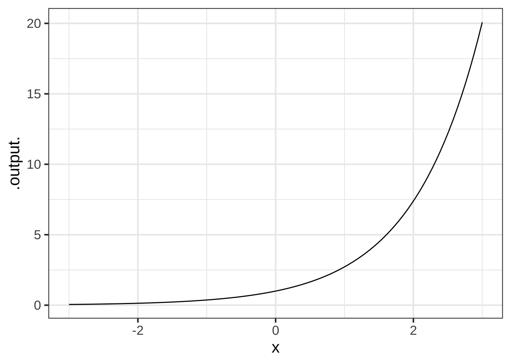

4 Describing functions
We will need to communicate about functions to your fellow humans and to computers. Important modes of communication include:  400
400
- Graphs of functions that show their “shape”
- Tables of inputs and outputs
- Word descriptions
- Computer function name
- Mathematical notation
In this chapter, we’ll illustrate these five different modes using the pattern-book functions. It’s important to become proficient at all five.
4.1 Computer commands {slice-plot-intro}
Since we’ve already introduced the pattern-book functions, this is a good time to show you how to draw a graph of them. After this short introduction, we’ll discuss graphics more generally and look at graphics of functions that have two inputs.
All the pattern-book functions have just a single input. You can draw graphs of single-input functions using the slice_plot() R/mosaic operator. You need to specify two pieces of information to slice_plot():
- Which function to graph. In R/mosaic, You state this with what’s called a tilde expression. A couple of examples will suffice for the moment.
- When the function has a name, like
exp()orlog()orsin(), the tilde expression looks likeexp(x) ~ x. On the left side of the tilde you put the name of the function you want to graph with the input name in parentheses. You can choose any input name you like: here we are usingx, but we are not limited to usingxor any other letter. Sometimes we even use named inputs (e.g.exp(time)). On the right side of the tilde, place the input name again. We’ll explain why the name appears in two places later. - When the function is being written as a formula, for instance
1/zort^2, put the formula on the left side of the tilde and the input name on the right side, like1/z ~ zor1/t ~ t.
- When the function has a name, like
- The graphics domain. As you know, the domain of a function is the collection of all possible legitimate inputs. For most of the pattern-book functions, the domain is \(-\infty < x < \infty\). As you might expect, it’s impractical to have a graphical axis that is infinitely long. So you have to choose some finite interval of the function domain to use. This finite interval is called the “graphics domain.” You specify the domain with a statement like
domain(x = c(-5,5)), which is setting the graphics domain to \(-5 \leq x \leq 5\). Note that the input name used indomain()must match the input name you selected in the tilde expression.
R uses the c() function to collect together the two numbers that define the left and right borders of the domain. In traditional notation, we write an interval in formats like \((-5, 5)\) or \([-5, 5]\) or \(-5 \leq x \leq 5\). None of these will work with the R language. For instance, the fragment (-5, 5) is not a complete expression in R; the opening parenthesis needs to be preceded by a function name. The c() function was invented for this purpose. It can combine any number of arguments, but two is enough for our purpose here: to specify an interval on the number line.3
The tilde expression and the graphics domain specifier are the two arguments to slice_plot(). All of these are correct commands for drawing a graph:
slice_plot(t^2 ~ t, domain(t=c(-2, 2)))4.2 Tables of inputs and outputs
Another way of describing a function is to give a table of inputs and outputs. Like graphics, a table can only show some of the possible inputs.
| input | output |
|---|---|
| -1.00 | 0.3678794 |
| -0.75 | 0.4723666 |
| -0.50 | 0.6065307 |
| -0.25 | 0.7788008 |
| 0.00 | 1.0000000 |
| 0.25 | 1.2840254 |
| 0.50 | 1.6487213 |
Before modern computing, tables were one of the primary means to describe functions. People working with calculus needed a reference collection of books containing tables for the functions they used. 420
With computers, we have better and faster ways to get the output of a function from the input. Still, modelers often use recorded data to construct functions. Tables are perhaps the most widely used method for storing and accessing data, although electronic spreadsheets are used today instead of printed tables.
Even today, a table can be a nice way to describe a function when we are interested in the output from only a handful of the possible inputs.
Conceptually, it’s helpful to keep in mind that every pattern-book function is just a way of organizing information that could have been stored in a table.
You will not have to generate tabular descriptions of functions to follow this book. It’s much more convient to implement the function in software so that the output can easily be displayed for any given inputs. On the other hand, in this book we’ll often use data in tabular form to create a modeling function. There’s little point in introducing this until you have some additional calculus concepts, so be patient.
4.3 Word descriptions
Knowing and correctly using a handful of phrases goes a long way in being able to communicate with other people about functions with a single input. Often, the words make sense in everyday speech (“steep,” “growing,” “decaying,” “goes up,” “goes down,” “flat”). 430
Sometimes the words are used in everyday speech but the casual person isn’t sure exactly what they mean. For instance, you will often hear the phrase “growing exponentially.” The graph of the exponential function illustrates exactly this sort of growth: flat for small \(x\) and growing steadily steeper and steeper as \(x\) increases.
Still other words are best understood by those who learn calculus. “Concave up,” “concave down,” “approaching 0 asymptotically,” “continuous,” “discontinuous,” “smooth,” “having a minimum at …,” “having a minimum of …,” “approaching \(\infty\) asymptotically,” “having a vertical asymptote.”
The next short sections describe six simple shape concepts: concavity, continuity, monotonicity, periodicity, asymptotes, and local extrema.
I’ll illustrate these concepts using three pattern-book functions graphed in Figure 4.1. 431
Figure 4.1: Three of the pattern-book functions: (a) exponential, (b) sinusoid, (c) power-law \(x^{-1}\).
4.3.1 Concavity
The slope of a function at a given input tells how fast the function output is increasing or decreasing as the input changes slightly. Concavity is not directly about how the function output changes, but about how the function’s slope changes. For instance, a function might be growing slowly in some region of the domain and then gradually shift to larger growth in an adjacent region. Or, a function might be decaying steeply and then gradually shift to a slower decay. Both of these are instances of positive concavity. The opposite pattern of change in slope is called negative concavity. If the slope doesn’t change at all—only straight-line functions are this way— the concavity is zero.
Concavity has a very clear appearance in a function graph. If a function is positive concave in a region, the graph looks like a smile. Negative concavity looks like a frown. Zero concavity is a straight line. 432
Referring to the three function examples in Figure 4.1 …
- The exponential is concave up everywhere in its domain.
- The sinusoid alternates back and forth between concave up and concave down.
- This particular power law \(x^{-1}\) is concave up for \(x > 0\) and concave down for \(x < 0\).
When a function switches between positive concavity and negative concavity, as does the sinusoid as well as the gaussian and sigmoid functions, there is an input value where the switch occurs and the function has zero concavity. (Continuous functions that pass from negative to positive or vice versa must always cross zero.) Such in-between points of zero concavity are called inflection points. A function can have zero, one, or many inflection points. For instance, the sinusoid has inflection points at \(x = \ldots, -\pi, 0, \pi, 2\pi, \ldots\), the cubic power function \(f(x)\equiv x^3\) has one, and the exponential has none.

Figure 4.2: A diagram showing a cubic function which is concave up until a point of inflection and concave down thereafter.
“Inflection point” appears in news stories, so it is important to know what it means in context. The mathematical definition is about the change in the direction of curvature of a graph. In business, however, it generally means something less esoteric, “a time of significant change in a situation” or “a turning point.”4 The business sense effectively means that the function—say profits as a function of time, or unemployment as a function of time—has a non-zero concavity, up or down. It’s about the existence of concavity rather than about the change in the sign of concavity.
One of the benefits of learning calculus is to gain a way to think about the previous paragraph that’s systematic, so it’s always easy to know whether you are talking about the slope of a function or the change in slope of a function.
Exercise 4.3: H2eu2
Answer these questions about the pattern-book functions. You can refer to the graphs in Figures 2.2 through 2.4.
Question A Which of these best describes the concavity of the gaussian function?
- It’s not concave. ︎✘ If it curves, it’s either concave up or down.
- It’s concave down. ︎✘ In some places, but not in others.
- It’s concave down in the center and concave up on both flanks. Right!
- It’s concave down on the left and concave up on the right ︎✘ Look again
Question B Which of these best describes the concavity of the sigmoid function?
- It’s not concave. ︎✘ If it curves, it’s either concave up or down.
- It’s concave down. ︎✘ In some places, but not in others.
- It’s concave down on the left and concave up on the right. ︎✘ Look again
- It’s concave up on the left and concave down on the right. Good.
Question C Which of these best describes the concavity of the second-order monomial \(m_2(x) \equiv x^2\)?
- It’s not concave. ︎✘ If it curves, it’s either concave up or down.
- It’s concave down. ︎✘ Is it a smile or a frown?
- It’s concave down on the left and concave up on the right. ︎✘ Look again
- It’s concave up everywhere. Good.
Exercise 4.4: PYKG5
In this activity, you will be examining the various pattern-book functions to look for two different features:
- Slope: whether the graph has a slope that is consistently positive, negative, both, or neither, and
- Concavity: whether the function being graphed is concave up, concave down, neither, or both (i.e., concave up in some regions of the domain and down for others).
Copy and paste the R/mosaic command below in a SANDBOX to draw a function graph. Remember to press “Run code.”

To modify the command to draw another function, replace the exp(x) with another formula, for instance 1/x.
Make a list of the pattern-book functions. For each function in the list, say whether the function crosses zero, touches zero but doesn’t cross, or doesn’t touch at all in the part of the domain shown in the graphic: \(-3 \leq x \leq 3\). Also note if the value of the function appears to be reaching a horizontal asymptote at zero for very negative \(x\), for very positive \(x\), for both, or neither.
We’ll show you the answers for the exponential function. You’ll have to modify the computer command to graph the other pattern-book functions.
| function name | R formula | slope | concavity |
|---|---|---|---|
| exponential | exp(x) |
positive | concave up |
| logarithm | |||
| sinusoid | sin(x) |
both | both |
| square | |||
| proportional | |||
| constant | |||
| reciprocal | |||
| hump | |||
| sigmoid |
4.3.2 Continuity
A function is continuous if you can trace out the graph of the function without lifting pencil from the page. A function is continuous on an interval (a,b) if you can trace the function over that whole interval. All of the pattern-book functions are continuous over any interval in their domain except for the logarithm and power-law functions with negative exponents. (This includes the reciprocal since it is a power-law with a negative exponent: \(1/x = x^{-1}\).) Those exceptions are not defined at \(x=0\).
To illustrate, consider the power-law function graphed in Figure 4.1. On any interval (a,b) that does not include 0, the function is continuous. For inputs \(x < 0\), the function is negative. For inputs \(0 < x\), the function is positive. So, on an interval that includes \(x=0\) the function jumps discontinuously from negative to positive. 433
4.3.3 Monotonicity
A function is monotonic on a domain when the sign of the slope never changes on that domain. Monotonic functions either steadily increase in value or, alternatively, steadily decrease in value.
Another way of thinking about monotonicity is to consider the order of inputs and outputs compared to a number line. If a function is monotonically increasing then it will preserve the order of inputs along the number line when it maps inputs to outputs, whereas a monotonically decreasing function will reverse the order. For instance, if the input \(x\) comes before and input \(y\) (i.e., \(x<y\)), then \(f(x)<f(y)\) for monotonically increasing functions (the order is preserved), but \(f(y)<f(x)\) for monotonically decreasing functions (the order of outputs is reversed).
Of the pattern-book functions in Figure 4.1: both the exponential and the power-law function are monotonic: the exponential grows monotonically and the power-law \(x^{-1}\) decreases monotonically. The sinusoid is not monotonic over any domain longer than half a cycle: the function switchs between positive slope and negative slope in different parts of the cycle. 434
4.3.4 Periodicity
A phenomenon is periodic if it repeats a pattern over and over again. The pattern that is repeated is called a cycle; the periodic function as a whole is one cycle placed next to the previous one and so forth. The day-night cycle is an example of a periodic phenomenon, as is the march of the seasons. The period is the duration of one complete cycle; the period of the day-night cycle is 24 hours, the period of the seasonal progression is 1 year.
Real-world periodic phenomena often show some slight variation from one cycle to the next. Of the pattern-book functions, only the sinusoid is periodic. And it is exactly periodic, repeating exactly the same cycle over and over again. The period—that is, the length of an input interval that contains exactly one cycle—has a value of \(2\pi\) for the pattern-book sinusoid. When used to model a periodic phenomenon, the model function needs to be tailored to match the period of the phenomena.
The idea of representing with sinusoids phenomena that are almost but not exactly periodic, for instance a communications signal or a vibration, is fundamental to many areas of physics and engineering. 435
4.3.5 Asymptotic behavior
Asymptotic refers to two possible situations depending on whether the input or output is being considered:
- When the input to a function gets bigger and bigger in size, going to \(\infty\) or \(-\infty\). If, as the input changes in this way the output gets closer and closer to a specific value, the function is said to have a horizontal asymptote of that value.
An example in Figure 4.1 is the exponential function. As \(x \rightarrow -\infty\), that is, as \(x\) goes more and more to the left of the domain, the output tends asymptotically to zero.
- When the output of a function gets bigger and bigger in size, going to \(\infty\) or \(-\infty\) without the input doing likewise. The visual appearance on a graph is like a sky-rocket: the output changes tremendously fast even though the input changes only a little. The vertical line that the skyrocket approaches called a vertical asymptote. The power-law function \(x^{-1}\) has a vertical asymptote at \(x=0\). If you were to consider inputs closer and closer to \(x=0\), the outputs would grow larger and larger is magnitude, tending toward \(\infty\) or \(-\infty\).
Several of the pattern-book functions have horizontal or vertical asymptotes or both. For instance, the function \(x^{-1}\) has a horizontal asymptote of zero for both \(x \rightarrow \infty\) and \(x \rightarrow -\infty\). 436
The sinusoid has neither a vertical nor a horizontal asymptote. As input \(x\) increases either to \(-\infty\) or \(\infty\), the output of the sinusoid continues to oscillate, never settling down to a single value. And, of course, the output of the sinusoid is everywhere \(-1 \leq \sin(x) \leq 1\), so there is no possibility for a vertical asymptote.
4.3.6 Locally extreme points
Many continous functions have a region of the input domain where the output is gradually growing, then reaches a peak, then gradually diminishes. This is called a local maximum. “Maximum” because the output reaches a peak at a particular input, “local” because in the neighborhood of the peak the function output is smaller than at the peak.
Likewise, functions can have a local minimum: the bottom of a bowl rather than the top of a peak.
Of the three pattern-book functions in Figure 4.1, only the sinusoid has a local maximum, and, being periodic, it repeats that every cycle. The sinusoid similarly has a local minimum in every cycle..
Many modeling applications involve finding an input where the function output is maximized. Such an input is called an argmax. “Argument” is a synonym for “input” in mathematical and computer functions, so “argmax” refers to the input at which the function reaches a maximum output. For instance, businesses attempt to set prices to maximize profit. At too low a price, sales are good but income is low. At too high a price, sales are too low to bring in much income. There’s a sweet spot in the middle. 437
Other modeling applications involve finding an argmin, the input for which the output is minimized. For instance, aircraft have a speed at which fuel consumption is at a minimum for the distance travelled. All other things being equal, it’s best to operate at this speed.
The process of finding an argmin or an argmax is called optimization. And since maxima and minima are very much the same mathematically, collectively they are called extrema.
Any function that has an extremum cannot possibly be monotonic, since the growth is positive on one side of the extremum and negative on the other side.
4.4 Computer function names
As you might expect, computer programmers and language developers have written software implementing several of the pattern-book functions: exp(), log(), sin(), dnorm(), and pnorm(). For these functions, the name tells everying, so far as the computer is concerned, that is needed to calculate the output from any given input. 440
Computer notation for the power-law and proportional functions is different because the body of these functions is so short. So instead of using parentheses to apply a named function, invoking the power-law or proportional functions is done using a syntax like x^p or x or z^4.5
When a function like \(\sqrt[3]{x}\) is written as \(x^{1/3}\) make sure to include the exponent in grouping parentheses: x^(1/3). Similarly,
later in the course you will encounter power-law functions where the exponent is written as a formula. Particularly common will be power-law functions written \(x^{n-1}\) or \(x^{n+1}\). In translating this to computer notation, make sure to put the formula within grouping parentheses, for instance x^(n-1) or x^(n+1).
4.5 Mathematical notation
You have grown up with traditional mathematical notation and have are likely familiar with the notation for several of the pattern-book functions: \(\ln x\), \(\sin x\), \(e^x\), \(x^p\) (as in \(x^2\) where \(p=2\) or \(\sqrt{x}\) where \(p=1/2\)). 450
Traditional notation mixes up several things that computer notation sensibly keeps separate. From the computer programmer’s point of view, traditional notation is idiosyncratic rather than systematic.
If you are interested in these things, three concepts from computing may help you appreciate the the differences:
Functional notation In computing, the notation in which a function name is followed by parentheses6 with the inputs inside the parentheses is called “functional notation.” For instance,
exp(x)is functional notation, since the inputxis between parentheses. Traditional mathematical notation sometimes leaves out the parentheses, as in \(\sin \frac{\pi}{2}\) or \(\ln 10\). But in this course I always include the parentheses, which are abolutely required in the computer notation, in the traditional notation as well, i.e. \(\sin\left(\frac{\pi}{2}\right)\).Infix notation For functions with two inputs, computing languages often support a different arrangement of the function name and the inputs where the name comes inbetween the arguments. You’ve seen this “infix” notation in parts of traditional arithmetic notation, for instance, \(3 + 5\) or \(8/2\). In R, power-law functions are often written in infix notation, e.g.
3^2orx^3. When you see a traditional notation like \(e^x\), you will be tempted at first to write this ase^x. But in R, the exponential function is written in functional notation:exp(x).Markup notation You are undoubtedly familar with word processing and, particularly, a style of word processing called What-you-see-is-what-you-get (WYSIWYG). In WYSIWYG, you can enter plain text just using the keyboard, but if you want to make something boldface or italics, you use the mouse to select the text involved and select a style from a menu. Typically, WYSIWYG mathematical content involves a similar mouse-based process. In contrast, in mainstream computer languages, the mouse is not needed at all. The computer commands are constructed from plain, linear sequences of letters and other characters.
Traditional mathematical notation includes features such as superscripts and special symbols that are easily written out with pencil in hand. Often this notation is beautiful and aesthetically cherished by mathematicians. But computer commands in most computer languages are straight sequences of characters using function or infix notation.7